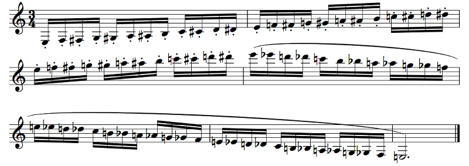
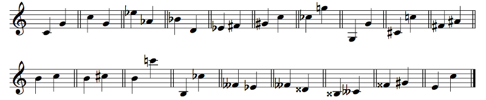
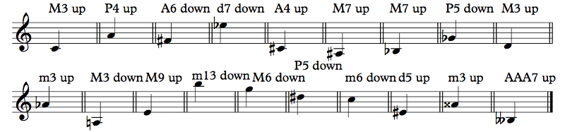

For this, it's best that you keep your keyboard open in another window, because we'll be referring to it a lot.
An interval is the distance between two notes. Intervals are named by counting the notes on the diatonic scale (actually, letter names) from the starting note to the ending note. So, for example, C to E form a third: C, D, E, three notes. Third.
Yes. But you're just going to have to deal with it, because this is the naming convention we've been saddled with. It's horribly illogical, but it's what it is. Blame history for not coming up with something better that stuck.
Let's look at the seconds in the diatonic scale:
Example 4.2
You see how there are two sizes? From C to D, you have to skip a black key, but from B to C you don't. If you use the Offtonic Keyboard to play the diatonic scale, you'll notice that B and C sound a lot closer together than C and D do. C to D, therefore, is a bigger second, while B to C is a smaller second.
But music theory treatises used to be written in Latin, not in English, so we use the Latin terms: major means "bigger" and minor means "smaller", so, in a linguistic jumble, the bigger second is called a major second and the smaller second is called a minor second.
No. Yes. Kinda. It's complicated. We'll get to it soon.
To make things a bit more complicated, a major second is also called a whole step or a whole tone (or even just a tone), while a minor second, being half the size of a major second, is also called a half step or a semitone. Don't confuse a whole tone with a whole note. A whole note is a note that's four quarter notes long; a whole step is an interval between two notes! Within a diatonic scale, a second inside the scale is also called a diatonic step. So, if you're in C major (the white notes), C to D is a diatonic step, as is E to F, but G to G# is not. We'll talk about those in a bit.
The major seconds are C to D, D to E, F to G, G to A, and A to B. The minor seconds are E to F and B to C. You will definitely want to remember this, but the easiest way to go about it is to imagine the keyboard in your head and look if there's a black key between the two notes. So if you can't remember whether F to G is smaller (minor) or bigger (major), visualize that keyboard, notice in your memory how there's a black key between the F and the G (the F# or Gb), and conclude that it must be major.
Now look at the sevenths:
Example 4.3
Let me explain. From C to D, we have just the two notes, C, D, so it's a major second up. But what if we go from D to C? That's just a major second down, right? Well, not if we go to the C above. In that case, we have D, E, F, G, A, B, C, seven notes, so it's a seventh. The seventh is the inversion of the second.
In music there are two totally different things known as inversion. One of them is when you take the lowest note of something and move it up an octave so it's above the next lowest note. So, if you have something like C4, D4, if you invert that, you have D4, C5. Note that a second plus a seventh is an octave.
It's stupid, but it's what it is, OK?
Anyway, there are two sizes of sevenths too. C to B is a bigger seventh (a major seventh) and D to C is a smaller seventh (a minor seventh). Notice that it's just the reverse of the seconds: C to B is a big seventh, but B to C is a small second. Of course! Since they add up to an octave, if one part is bigger then the other part must be smaller, right?
The major sevenths are C to B and F to E. The minor sevenths are D to C, E to D, G to F, A to G, and B to A. This is also very important to remember, and the easiest way to do that is to think of the inverse. Is F to E a major or a minor seventh? Well, E to F is a minor second, so F to E must be a major seventh.
Now the thirds:
Example 4.4
Again, they come in bigger (major) and smaller (minor) sizes. If you notice, the interval from C to E is two whole steps (C to D, D to E), while from D to F it's a whole step (D to E) and a half step (E to F). The bigger kind is the major third, and the smaller kind is the minor third.
To answer your question from before, this does have to do with major and minor scales. The major scale has a major third from the tonic. So, for example, in C major, C is the tonic, so the scale contains the note a major third up, E. In A minor, A is the tonic, so the scale contains the note a minor third up, C. There's a lot more to major and minor scales than just what size the interval from the tonic to the third note is, but this is at least where the name comes from!
The major thirds are C to E, F to A, and G to B. The minor thirds are D to F, E to G, A to C, and B to D. This is incredibly foundational to Western music theory, so you very much need to know this. Visualize the keyboard, hear the notes in your head, do whatever you need, but you need to know this.
And the sixths:
Example 4.5
Sixths are inversions of thirds. There's not much more to say about them. Again, the major sixth is the bigger one and the minor sixth is the smaller one. If the third is bigger, its inverse must be smaller, and vice-versa.
The major sixths are C to A, D to B, F to D, and G to E. The minor sixths are E to C, A to F, and B to G. The easiest way to remember this is to go up a fifth (we'll talk about them in a minute) and see if you have to go up a whole step or a half step to get to the sixth. Actually, you may prefer inverting the sixth and checking the third that you get. Generally it's less important to recognize a size of sixth than it is for other intervals, so it's not a huge deal.
You know what is a huge deal, though? Fourths:
Example 4.6
And fifths:
Example 4.7
If you actually listen to the interval (play it on the Offtonic Keyboard, or just on your own instruments), you'll notice something... important. In the case of the fourths, all of the fourths in the diatonic scale are the same size except one. If you play any fourth, you'll notice that it has a particular kind of sound. If you play that fourth, on the other hand, you get a very different kind of sound, a much harsher one. Notes that play well with each other are said to be consonant, while notes that sound harsh with each other are said to be dissonant. One is not better than the other. Consonant things don't necessarily sound good; dissonant things don't necessarily sound bad.
We consider that bigger fourth to be kind of special. So, we don't have bigger fourths and smaller fourths; we just have... fourths. Just one size. Except for that special one, which is bigger than the normal fourth. So, that special fourth is called an augmented fourth, and the other fourths are unmodified, so they're perfect fourths. "Perfect" here just means that they're normal, unmodified fourths.
The perfect fourths are C to F, D to G, E to A, G to C, A to D, and B to E. The augmented fourth is F to B. You're going to want to memorize this. You're going to want to memorize this very hard.
The augmented fourth has a special name. See how F to B is made up of the whole tone from F to G, the whole tone from G to A, and the whole tone from A to B? There are three whole tones. Therefore, we call this the tritone. The tritone is incredibly special. There's a popular myth that it used to be called the devil's interval, diabolus in musica, mostly because fourths sound nice and consonant except for this one. (Actually, we'll see that fourths aren't really all that consonant and tritones aren't really all that dissonant... but this will have to wait quite a while!)
The tritone is special for another reason: if you count the white keys and black keys in the tritone, you get 6: F to F#, F# to G, G to G#, G# to A, A to A#, A# to B. There are 12 total notes in an octave, so a tritone is half of an octave!
When we look at the fifths, we see a very similar story: they're all consonant (this time for real) except one, which is smaller than the others. C to G is consonant, but B to F is not. We similarly call the normal, unmodified fifth the perfect fifth, and since the ugly-sounding fifth — the wolf fifth — is smaller, we call it a diminished fifth.
The perfect fifths are C to G, D to A, E to B, F to C, G to D, and A to E. The diminished fifth is B to F. This is foundational in Western music theory, so you will really want to know this off the top of your head. The fifth is the single most important interval between different pitch classes, and it will come up again and again and again. You could argue that the entire world of Western music theory revolves around the perfect fifth.
Notice that when you invert a perfect fourth, you get a perfect fifth. When you invert the F-B augmented fourth, you get the B-F diminished fifth.
Clever question! Remember that we name intervals by counting letter names, so F to B is a fourth: F, G, A, B. B to F is a fifth: B, C, D, E, F. But you were right on the money when it comes to half an octave: a diminished fifth is also exactly half of an octave! In fact, the augmented fourth and the diminished fifth have the same size! Isn't that kind of amazing?
Technically, no. The tritone is specifically the augmented fourth. But, in practice, nobody really makes a distinction; the diminished fifth is a tritone too.
It's just how you count the interval. If you go up three tones from B, you get B, C#, D#, E#. If you go up a semitone, two tones, and another semitone from B, you get B, C, D, E, F. B to F is a diminished fifth, while B to E# is a tritone. Yeah, they're the same key on the keyboard. But...
Here's a hint of worlds to come: in some musical systems, the augmented fourth and diminished fifth actually have different sizes. With 12 equally-spaced notes per octave, a tritone is exactly half the octave. But what if we had 19 equally-spaced notes per octave instead? We'll look at that eventually... really eventually. For now, let's make sure we do our bookkeeping correctly and call B to F a diminished fifth instead of an augmented fourth, but the name "tritone" applies to both.
There are two basic intervals we haven't talked about yet. That's because they're boring. The first is the unison, which is the interval between a note and the same note, so, for example, E to E in the same octave. This is called a perfect unison, or a perfect prime, perfect because it's unmodified. There's nothing to show in a diagram so I won't bother. Unison just means that they're the same note; if multiple people play in unison, they're all playing the same notes. Prime is just "first", in comparison to "second", "third", etc. for the other intervals. The diatonic scale contains no unisons that are not perfect.
The other interval is the octave:
Example 4.8
There's really just one kind of octave in the diatonic scale, so all of these octaves are perfect octaves. The octave is important because, for some reason that I don't quite understand, we perceive two notes an octave apart as somehow being very similar. A G3 and a G4 are both G's; they're the same note, whatever that means. When we sing with each other, we naturally do so in octaves, with men singing an octave lower than women, children singing an octave higher than adults, etc. (In some cultures, like Yemenite Jews, they actually naturally sing in perfect fifths, which sounds really weird to my Western ears, but it's normal to them!) We say that notes that are separated by octaves belong to the same pitch class (this is an equivalence relation, if you happen to know what that means; if not, don't worry). G1, G3, G9, etc. are all in the pitch class G. In our 12-tone system there are 12 pitch classes, but there are plenty of systems (some of which we'll talk about) with more. The diatonic scale consists of 7 pitch classes out of those 12. I'm not really going to bother being clear about pitch class versus pitch, but that's what it means.
It's a little silly, but the octave is the inversion of the unison. It makes a kind of trivial sense, doesn't it? The numbers in an inversion add up to 9: the unison (1) and the octave (8), the second (2) and the seventh (7), the third (3) and the sixth (6), the fourth (4) and the fifth (5).
Sure! These are called compound intervals (as opposed to simple intervals, those less than an octave). They're named the same way. For example, C4 to D5 is a major ninth (C4, D4, E4, F4, G4, A4, B4, C5, D5, 9 notes), D4 to G5 is a perfect eleventh, etc. They're major or minor or perfect or diminished or augmented or whatever in the same way as the same interval reduced by an octave or many. Two octaves is a 15th. To widen an interval by an octave, just add 7.
Not 8. Again, it's silly. But it makes sense. Let's actually see it make sense. C to D is a second: C, D, two notes. But D is actually just one step away from the C, because you shouldn't count the starting note. D to C is a seventh: D, E, F, G, A, B, C, seven notes. But it's actually six diatonic steps away: D to E, E to F, F to G, G to A, A to B, B to C. Let's add these two intervals together: C to D, a second, and D to C, a seventh. If we just add the numbers, what we're really doing is C, D plus D, E, F, G, A, B, C; we're counting the D twice! So if we remember that a second is one step and a seventh is six steps, we combine them and we get seven steps, which is an octave. Similarly, if you add an octave to a second, you get eight steps, which is a ninth. The rule when adding two intervals is to add the numbers and subtract 1. The rule when subtracting two intervals is to subtract the numbers and add 1. What's the combined interval of a sixth and a fourth? 6 + 4 – 1 = 9, so it's a ninth. If you go up a sixth and down a fourth, what do you get? 6 – 4 + 1 = 3, so it's a third.
Holy shit, how can you say that math is stupid? Math is fucking awesome, and—
Oh, whew. OK. Yes, this math is fucking idiotic. But it's what it is. Later on in history, with the rise of atonal theory in the 20th century, people made some decisions that were... much better. Much more sensible. But unfortunately, here in the world of traditional music theory, the numbers are just stupid.
For fun, here are all of the simple intervals (and octaves) in the diatonic scale:
Example 4.9
We talked about major (bigger) and minor (smaller) intervals, but you may occasionally hear about a vaguer sort of interval: the diatonic interval. A diatonic interval is just whatever's in the scale you're in. So, if you're in C major and you go up a diatonic third from E, you get to G. That was a minor third. If you go up a diatonic third from F, you get to A. That was a major third. Diatonic also has a meaning of "in the scale", and that's what this is. If you hear an interval size without a qualifier, like "up a sixth" or whatever, that means go up whatever sixth is in the scale, be it major or minor (or even something stranger).
All of the notes on the keyboard in order, white keys and black keys, make up the chromatic scale. In the diatonic scale, the steps vary between whole steps and half steps, but in the chromatic scale, every step is a half step. There are 12 half steps per octave.
The chromatic scale has no tonic or dominant or anything like that. It's just all of the notes.
Yes.
Doesn't matter, really. You generally write sharps going up and flats going down, but as we continue talking about scale degrees you'll see that it's not quite so simple.
In high school, being able to play the chromatic scale was part of auditions for various honor bands (like All-County and All-State), and you would play it in the so-called "All-State Pattern". I went to high school in Florida; I have no idea if other states did things the same way. Basically, you would go through the range of your instrument up and down, up tonguing and down slurring. On clarinet it looked like this:
Example 4.10
You're just going insane, nothing to worry about.
Nah, just kidding. I did that because I don't want to lie to you. See, the clarinet is pitched in Bb (well, some are pitched in other keys, but the common one is in Bb). This means that when you play a C on the clarinet, the note that you actually hear is a Bb on the piano. For most of these examples I wouldn't bother, but for this one I know someone out there will complain if I don't do it right.
The clarinet is a transposing instrument. It's not just the clarinet! The trumpet and horn are transposing. The saxophones are transposing. Even the guitar sounds an octave lower than written! That's just the way it is, man, chill!
There is actually a reason: it's common to switch between similar instruments. An orchestral clarinetist, for example, will also have on hand an A clarinet, which is a half step lower, along with his Bb clarinet. The nice thing is that when you read the music, you see a G, say, well, that will be the same fingering on any clarinet: Bb soprano, A soprano, Eb sopranino, Eb alto, Bb bass, even the F basset horn, Eb contralto, and Bb contrabass. On any size of clarinet, you make a G the same way, but the note you actually hear depends on the size of the instrument. Usually, the instrument is designed to be played in C major, with no sharps or flats, with the notes in that key just being easier to play and more in tune. That's kind of the "fundamental pitch" of the instrument, in a sense. If the size of the instrument is such that the fundamental pitch is not a C, the musical tradition is to pretend that it is C in music for the instrument, and that's how you get transposing instruments. For example, the Bb clarinet is a major second low, so if you see piano music and want to play it on clarinet, you need to read everything a major second up so that it sounds right. If I see an E on the music, I need to play an F# so that it sounds like an E.
It sure is confusing. We'll spend some time talking about orchestration in a later chapter and hopefully you'll be more accepting of the confusion then (it's not going to stop being confusing). As for the F# from the E... let's talk about intervals!
It's useful to develop some abbreviations. We can describe every interval by a number and a size. For example, a major third has a number of 3 and a size of major. We would say that it's an M3. In general, we use m for minor, M for major, and P for perfect, then d for diminished and A for augmented. So a perfect 11th is a P11, a minor 9th is an m9, a major seventh is an M7, a diminished fifth is a d5, and an augmented fourth is an A4. Some also use TT as an abbreviation for the tritone, but I'll stick to the A4 and d5 as necessary. The unison has the number 1, in case that wasn't clear, so a perfect unison would be a P1. We'll be using these abbreviations quite a bit, so hopefully they make sense. The thing to remember is that a little m is minor and a big M is major. When we talk about chords later, m and M will come back.
To name an interval that doesn't just use the white keys, all you have to do is find the interval of the corresponding letter names and make it shrink or grow as necessary. Let me give you an example. What's the interval from F to Bb? Well, F to B is an augmented fourth, so if we lower the top note once, it becomes a perfect fourth. For major/minor intervals like seconds, thirds, sixths, and sevenths, the order is diminished, minor, major, and augmented; for perfect intervals like unisons, fourths, fifths, and octaves, the order is diminished, perfect, augmented.
Eh. You don't. If you have octave numbers, like, you know it's F3 and Bb3, then sure, you know. If you see them on a staff, you know. But just from words, I'm just going to assume that it's the simplest ascending interval unless I say otherwise, so F to Bb means that the Bb is the closest one above the F. But that's a good point; keep me on my toes!
So let's do some more examples. D to D# is? D to D is a unison, so since we're making the interval wider by a half step, it's an augmented unison, an A1. Augmented unisons are also called chromatic semitones. Look at this. D to D# is an A1, and D# to E is an m2. So, a whole step consists of a chromatic semitone and a diatonic semitone. In our 12-tone system, the chromatic and diatonic semitones have the same size, but later on (much later on) we'll see examples of systems where they don't.
You can! D to D is a perfect unison, as we know, a P1. We're making the interval wider by a half step by making the top note sharp, and then we're making it wider by another half step by making the bottom note flat. We're augmenting this interval twice! We call this a doubly augmented unison. You don't see doubly augmented or doubly diminished intervals in music very often, to be sure. I don't know of a standard way to abbreviate this, so I just write AA1 for the doubly augmented unison.
The most diminished and augmented intervals you can make using up to double accidentals are the interval from Fbb to Bx, which is a quintuply-augmented fourth (AAAAA4), and its inversion, from Bx to Fbb, a quintuply-diminished fifth (ddddd5). Again, not something you see in music every day (or, for that matter, ever), but it's theoretically possible!
Let's look at a couple of other intervals. C to Eb: C to E is a major third (M3), but we're lowering the top note by one, so C to Eb is a minor third (m3). C to D#: C to D is a major second (M2), but we're raising the top note by one, so C to D# is an augmented second (A2). C to Eb is an m3 and C to D# is an A2. Eb and D# are enharmonic to each other (they're the same note on the keyboard), so the minor third and the augmented second have the same size. Another one: B to Ab. B to A is an m7, so since we're lowering the top note by one, B to Ab is a d7. This interval is a pretty common one. How about B# to E? B to E is a P4. We're raising the lower note up one, so we're making the interval smaller: B# to E is a d4. This is also a fairly common interval. Note that it's enharmonic to the M3.
Notice that the rules for inversion still hold with diminished and augmented intervals. If you invert an A2, you get a d7. The numbers add up to 9, and the size flips: P stays P, but M and m switch, A and d switch, AA and dd switch, etc. Invert a d4 and you get an A5. Invert an m3 and you get an M6.
Another way to measure the distance between pitches is by simply counting semitones. A perfect unison is 0 semitones, of course. An m2 or A1 is 1 semitone; an M2 is 2 semitones; m3 is 3; M3 is 4; P4 is 5; A4 or d5 is 6; P5 is 7; m6 is 8; M6 is 9, m7 is 10; M7 is 11; P8 is 12; m9 is 13; M9 is 14, etc. The number of semitones doesn't actually tell you what the interval is! 4 semitones could be an M3 or a d4, or even something weird like an AA2. On the other hand, if you know the interval number, the number of semitones can tell you what the size is. So if you know that your 4 semitones are a fourth, and you know that a P4 is 5 semitones, then you know that 4 semitones must be a d4.
A lot of music theory analysis talks about intervals, so this is an important thing to know and understand. So, here are some exercises. In this set, just name each interval. The first is a P5 up. The second is a P4 down. You do the rest:
Example 4.11
It's a descending third of some sort. D to F is a minor third, but we're lowering the top note by 2 and we're raising the bottom note by 2, so we're diminishing this minor third four times: it's a dddd3, descending.
That's a very astute observation! But it's not a trick question. The bottom note really is higher than the top note. A quadruply diminished third is, in fact, an interval with size –1 semitones. That's a negative number!
If you ever want to write music that nobody can read, shit like this is a great place to start. Needless to say, if you find yourself writing quadruply diminished thirds in real life, something is probably wrong with you. There are totally legitimate reasons for having diminished seconds, and they're actually kind of annoying. Let's say you have a G#, and you want to reinterpret it as an Ab. They're the same note; you're just interpreting it differently, which is totally legit. Then you'll actually have a diminished second from the G# to the Ab. You can even use a tie to connect them. This is a fairly common occurrence; even Beethoven does something like this in his famous Symphony No. 5, first movement. There are even times when a diminished octave is useful, though I won't go into detail right here. You may even see a doubly diminished or doubly augmented interval in some very rare occasions, though I honestly can't think of any right now. But a quadruply diminished third? Yeah, no. It's a purely theoretical possibility.
Here's another exercise. In this one, I tell you the name of the interval and you fill in the second note:
Example 4.12
Funny you should ask... See if you can get these intervals before the answer pops up. You have 5 seconds for each interval.
Less than you might think, to be honest, but it helps with being able to read notes quickly. The real value will come a bit later when we do ear training: that's the same exercise, except that instead of seeing the notes on a staff, you hear them, possibly together or possibly separately.
In an ear training game? You can't. You should be able to hear that it's a tritone, but obviously you can't tell the difference between enharmonic intervals just by hearing two notes. On the other hand, in real music, you often can. We'll explore that soon when we start talking about scale degrees.